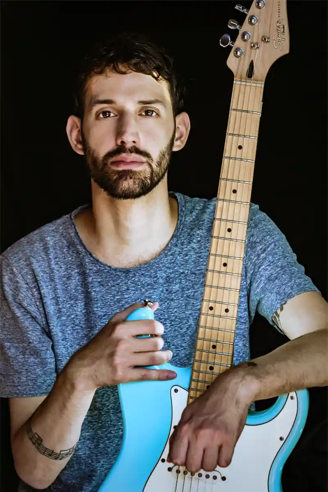

Bio

Ezequiel Senosiain es un músico de Buenos Aires, Argentina, cuya propuesta combina
diferentes influencias dentro del Pop-Rock. A lo
largo de su recorrido artístico desarrolló tanto su proyecto solista como su participación en distintas
bandas, explorando diversas facetas compositivas e interpretativas.
Formó parte de Sueño Atómico, banda que permaneció activa hasta 2013. Entre 2017 y 2019 integró Liu Fank,
proyecto que recorrió el circuito under de Zona Sur del conurbano bonaerense y distintos escenarios de la
Ciudad de Buenos Aires, período en el que publicó un single y el EP de tres canciones Ocaso en
Movimiento.
También fue integrante de Escénica, banda que desarrolló su actividad entre 2006 y 2011. En 2025 el grupo
volvió a reunirse para lanzar Después del Letargo, un nuevo trabajo discográfico que marcó el regreso del
proyecto.
Actualmente continúa desarrollando su carrera solista, con nuevas composiciones que mantienen una identidad
ligada al Pop-Rock y a la búsqueda de un sonido propio.